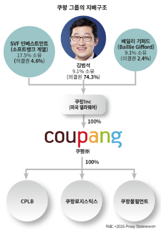
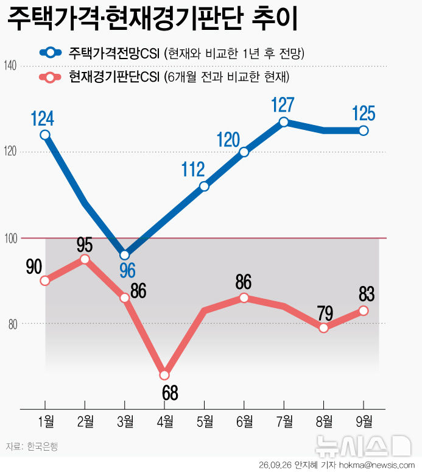
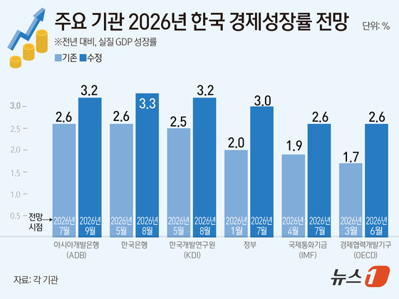

9/24(목) · 기준 2026-09-23 22:00 ~ 2026-09-24 06:00
엑셀 다운로드
"이미지 다운로드"를 누르거나, 이미지를 길게 눌러 저장한 뒤 카톡으로 보내세요.



![[연합뉴스] 2026 아이치·나고야 아시안게임 메달리스트(23일)](images/graphics/연합뉴스_01.jpg)
![[연합뉴스] 2026 아이치·나고야 아시안게임 국가별 메달 현황(23일)](images/graphics/연합뉴스_02.jpg)
![[연합뉴스] 주요 기관별 한국 경제성장률 전망](images/graphics/연합뉴스_03.jpg)
![[뉴시스] OECD, 올해 韓 성장률 3.7%로 상향…G20 중 최대폭](images/graphics/뉴시스_05.jpg)
![[뉴시스] 8월 인구이동 53년 만에 최소…주택거래 줄고 고령화 겹쳐](images/graphics/뉴시스_06.jpg)
![[뉴시스] 서울 소형 아파트 상승률, 대형의 2배…'소형 쏠림' 뚜렷](images/graphics/뉴시스_07.jpg)
![[뉴스1] [그래픽] 2026 아이치·나고야 아시안 게임 펜싱 남자 사브르 개인전 금메달-오상욱](images/graphics/뉴스1_08.jpg)
![[뉴스1] [오늘의 증시] 코스피 코스닥(9월 23일)](images/graphics/뉴스1_09.jpg)
![[뉴스1] [그래픽] 2026 아이치·나고야 아시안 게임 사격 여자 10m 공기권총 개인 금메달-추가은](images/graphics/뉴스1_10.jpg)
![[뉴스1] [오늘의 그래픽] 李](images/graphics/뉴스1_11.jpg)